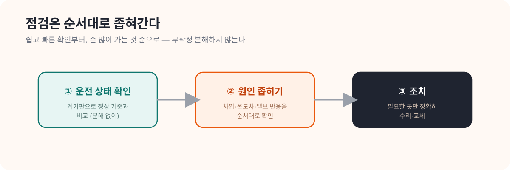

CHAPTER 06 · 설비·점검 심화
06. Gebwell O&M 요약
한 줄 요약
좋은 점검은 "무엇을 볼까"보다 "어떤 순서로 볼까"가 핵심이다. 의사가 배 아프다고 바로 배를 가르지 않고 문진 → 촉진 → 검사 순으로 좁혀가듯, 기계실 점검도 운전 상태 확인 → 원인 좁히기 → 조치 순서를 따른다. 그리고 그 순서를 알려면 "정상이 어떤 모습인지"를 먼저 알아야 한다.
- O&M (Operation & Maintenance): 운전(매일 돌리기)과 유지관리(점검·정비)를 합쳐 부르는 말.
- 운전 상태: 지금 설비가 정상적으로 돌고 있는 모습. 온도·압력·유량이 정상 범위인지.
- 정상 기준값: "이 정도면 정상"이라고 정해둔 값의 범위. 이상 판단의 출발점.
- 차압 / 온도차: (5장 참고) 각각 압력 차이와 입·출수 온도 차이. 막힘·효율 저하를 보여주는 핵심 신호.
- 오진: 원인을 잘못 짚는 것. 순서 없이 점검하면 오진 가능성이 커진다.

왜 이 문서를 읽는가
5장에서 기계실의 구조를 배웠다면, 이제는 그걸 실제로 어떤 순서로 확인하고 점검하는지를 알아야 한다. 이 문서는 HeatGrid의 작업지시서가 어떤 문장과 순서를 가져야 하는지를 보여준다.
점검의 기본 원칙
한 흐름으로 본다
매뉴얼은 설치 → 운전 → 점검 → 안전을 따로따로가 아니라 하나의 흐름으로 다룬다.
정상을 먼저 안다
이상을 판단하려면 "정상이 어떤 모습인지"를 먼저 알아야 한다. 기준이 없으면 이상도 못 잡는다.
순서대로 좁힌다
무작정 분해하지 않는다. 운전 상태 확인 → 원인 좁히기 → 조치 순서를 지킨다.
상황으로 이해하기: 열교환기 문제 의심
열교환기가 의심된다고 바로 뜯어보면 안 된다. 먼저 운전 상태 → 차압 → 온도차 → 밸브 반응을 <strong>순서대로</strong> 확인한다. 이 순서가 없으면 시간도 많이 쓰고, 멀쩡한 부품을 건드려 오진할 가능성도 커진다. 순서는 "쉽고 빠르게 확인되는 것부터, 손이 많이 가는 것 순으로" 짜는 게 원칙이다.
이 순서가 중요한 이유는 분명하다. 운전 상태와 차압은 분해 없이 계기판으로 바로 확인된다. 거기서 이미 원인이 좁혀지면, 굳이 열교환기를 뜯지 않아도 된다. 가장 비용이 적게 드는 확인부터 하는 것이다.
PreDist와 연결하면
공급온도 저하와 환수온도 이상이 함께 나타나면, HeatGrid는 "열교환 효율 저하 의심 — 차압과 온도차를 먼저 확인하라"처럼, 단순 경보가 아니라 점검 순서가 들어간 작업지시를 만들 수 있다.
HeatGrid에 적용하기
- 작업지시서에는 반드시 점검 순서가 들어가야 한다.
- 정상 기준값과 안전 주의사항을 같이 붙여야 정비사가 바로 판단할 수 있다.
- "모델이 맞았는지"보다 "정비사가 바로 움직일 수 있는지"가 더 중요하다.
스스로 확인하기
- 좋은 작업지시서가 왜 점검 순서를 가져야 하는지 설명할 수 있는가?
- 정상 운전 기준이 왜 먼저 필요한지 이해했는가?
- 센서 이벤트를 실제 점검 항목으로 바꿀 수 있는가?
더 깊이 보고 싶다면
- 08_District_Energy_PM_Checklist_요약.md — 점검 순서를 체크리스트로 구조화
- 12_정비사_업무와_출동_프로세스_가이드.md — 정비사의 실제 출동 흐름